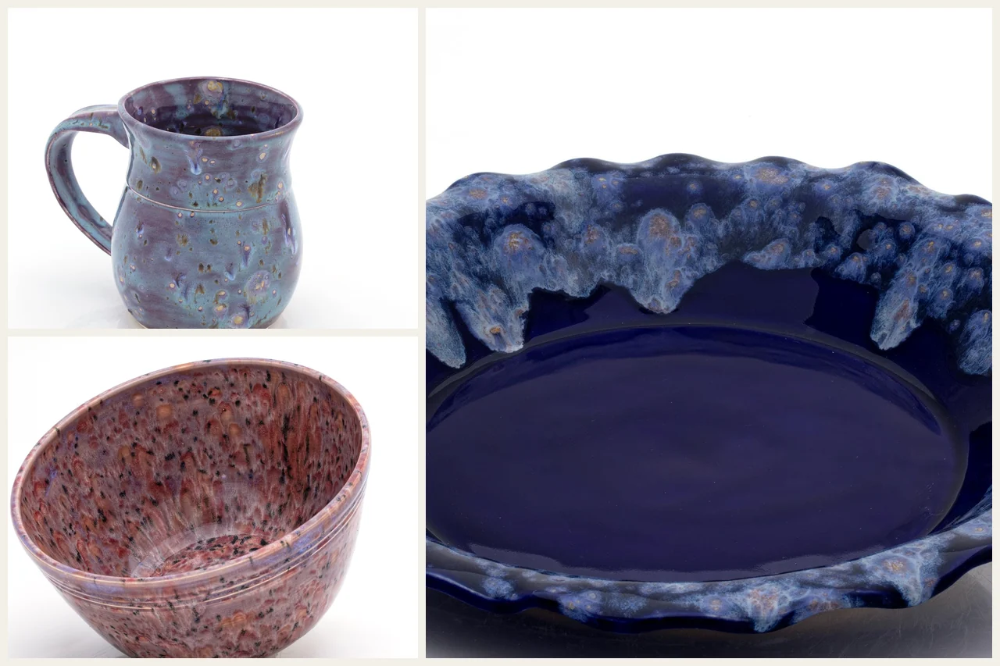
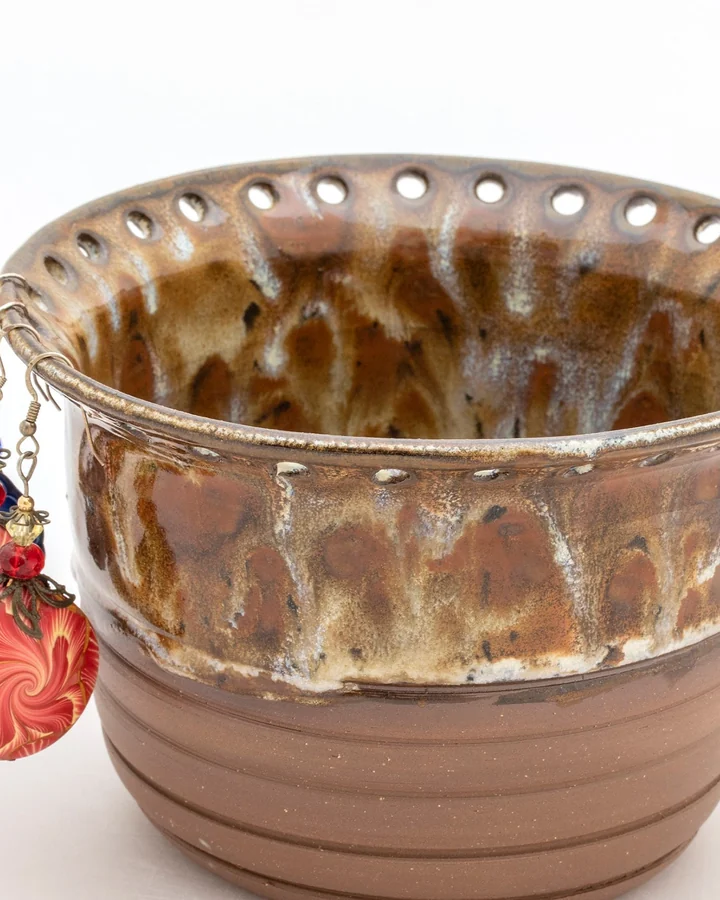
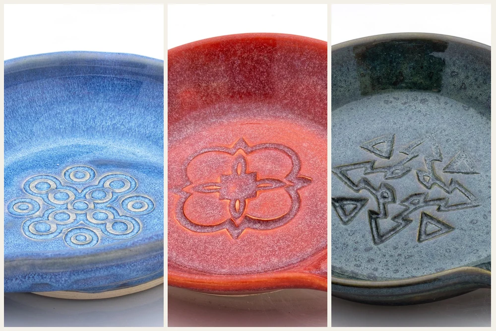
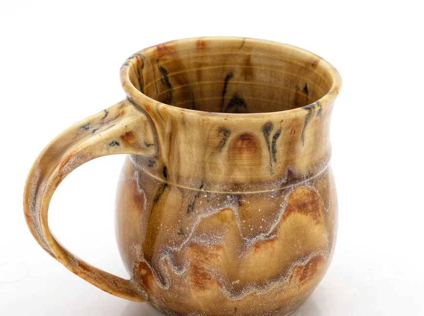
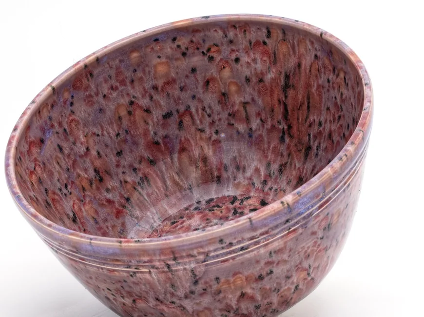
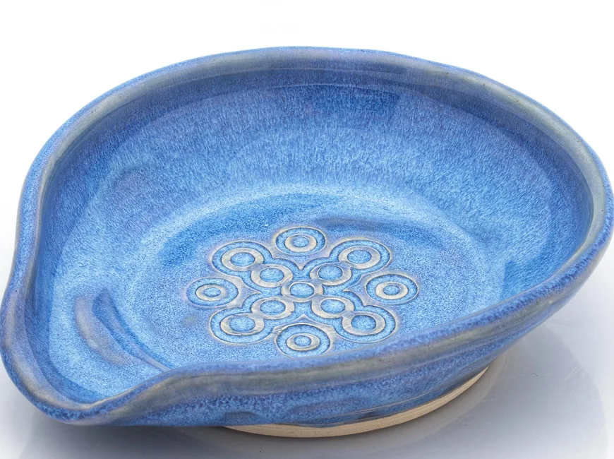
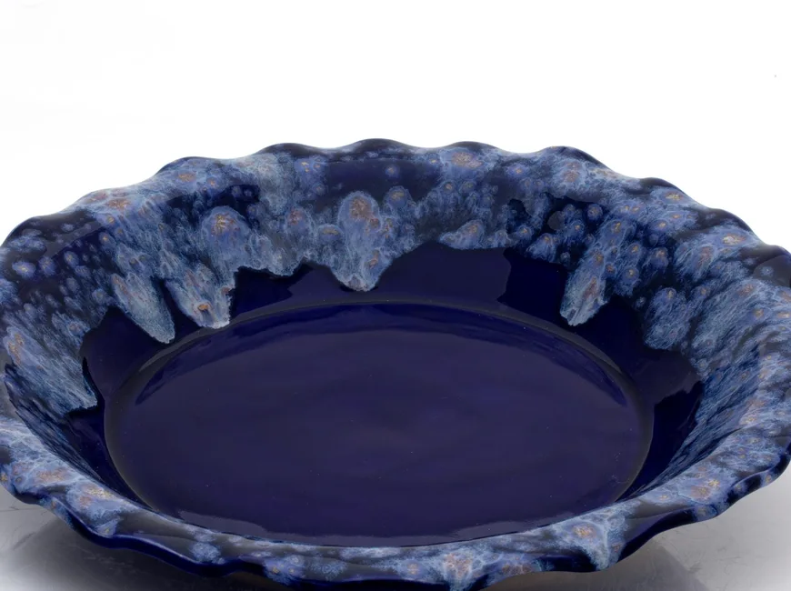

Layered glazes
Several glazes are layered so they intermingle in the firing, making each piece original and unique.

Handmade pottery · Alabama
Functional pottery, thrown on the wheel and finished with layered glazes. Made to be used and enjoyed.
Meet the Artist
Owner & artist of Moon Lake Pottery
I’m the artist behind Moon Lake Pottery. I make functional pottery on the potter’s wheel from my home studio in Alabama, looking out at the lake that gave the shop its name. I layer several glazes so that when they are fired they intermingle and flow together, making each piece original and unique. The pieces in my shop are intended to be handled, used and enjoyed.
If I’m not spending time with my children, husband or dogs I’m doing Pottery.
Our story

01 How it started
Toni’s pottery journey began in 1985, when she took her first ceramics class and immediately fell in love with clay. She kept at it until 1991, when she became pregnant with her first child while living in the Hudson Valley in New York. After a year off she jumped back in, taking classes twice a week and learning from teachers all over New York State.
A year as an apprentice is where her love for pottery really exploded. She began teaching classes, making glazes and using a kiln. It was the best stepping stone.
— Toni
02 Where & how it’s made
Toni later learned in a community studio in New Zealand, took a five-year hiatus in New Jersey to spend more time with her children, then moved to Alabama, joined a local studio and began teaching adults and children how to throw on the potter’s wheel. She eventually built a home studio on their property. The name Moon Lake Pottery comes from the beautiful lake she sees every day from that studio.

03 What makes it special
Several glazes are layered so they intermingle in the firing, making each piece original and unique.
Functional pieces intended to be handled, used and enjoyed — microwave and dishwasher safe, unless specified.
Toni’s pottery continues to evolve as she tries new forms, techniques and glazes.
Reviews
What we make
Functional pottery, thrown on the wheel and finished with layered glazes. Here are a few favorites.

Wheel-thrown coffee mugs in layered glazes, each one a little different.

Everyday bowls and serving bowls, thrown on the wheel and glazed to be unique.

Small, useful pieces for the kitchen, each with its own glaze and stamped pattern.

Fluted pie dishes and other serving pieces, made to be brought to the table.
Everything is sold through the online shop, with secure checkout and buyer protection.
Stay in the loop
Sign up to be the first to know about sales and new products.
You’re in! 🎉
Continue to the shopWheel-thrown pieces by Toni, finished with layered glazes. Follow along on Instagram for updates!
Visit the shop